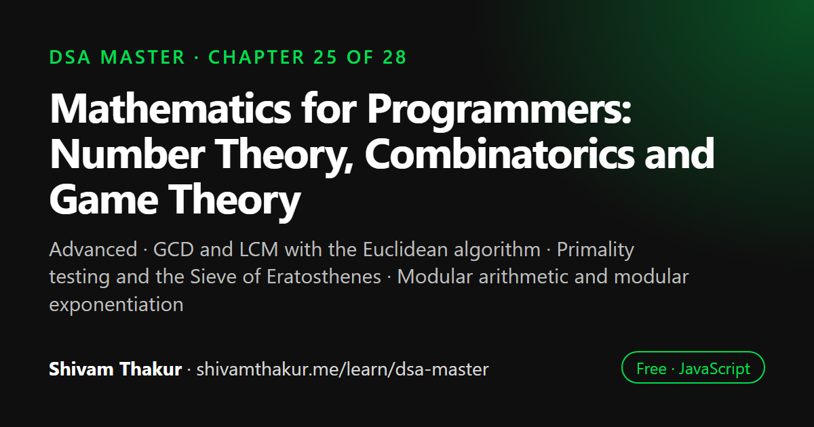

Chapter 25 of 28 · Advanced
Mathematics for Programmers: Number Theory, Combinatorics and Game Theory
Mathematics for Programmers — Number Theory, Combinatorics, and Game Theory

Many algorithm problems rest on a small amount of mathematics. This chapter covers the number theory programmers use most (GCD and LCM with the Euclidean algorithm, primality testing, the Sieve of Eratosthenes, modular arithmetic and fast exponentiation), the combinatorics behind permutations, combinations and Pascal's triangle, and an introduction to game theory through Nim and the Sprague-Grundy theorem.
In this chapter you will learn
- GCD and LCM with the Euclidean algorithm
- Primality testing and the Sieve of Eratosthenes
- Modular arithmetic and modular exponentiation
- Permutations, combinations and Pascal's triangle
- Nim and the Sprague-Grundy theorem
25.0 The Quiet Foundation Underneath Everything
Several algorithms in this book have quietly relied on mathematical facts without stopping to prove them: Chapter 4's hash function used a "multiply by an odd prime" strategy, Chapter 14's Union-Find relied on a rank-height inequality, Chapter 22's Rabin-Karp needed modular arithmetic to avoid overflow. This chapter makes that mathematical foundation explicit, building the number theory, combinatorics, and introductory game theory that a genuinely complete DSA education requires — and, true to this book's philosophy, always explaining why before how.
PART A: NUMBER THEORY
25.1 GCD and LCM: The Euclidean Algorithm
Definition: The Greatest Common Divisor (GCD) of two integers is the largest integer that divides both without a remainder. The Least Common Multiple (LCM) is the smallest positive integer divisible by both.
25.1.1 The Euclidean Algorithm
function gcd(a, b) {
while (b !== 0) {
[a, b] = [b, a % b];
}
return a;
}
function lcm(a, b) {
return (a / gcd(a, b)) * b; // divide FIRST, then multiply — avoids unnecessary overflow risk
}
console.log(gcd(48, 18)); // 6
console.log(lcm(4, 6)); // 12Dry Run
gcd(48, 18):
a=48, b=18: a%b = 48%18 = 12. [a,b] = [18, 12]
a=18, b=12: a%b = 18%12 = 6. [a,b] = [12, 6]
a=12, b=6: a%b = 12%6 = 0. [a,b] = [6, 0]
b=0 -> loop ends. return a=6 ✓25.2 Primality Testing and the Sieve of Eratosthenes
25.2.1 Naive Primality Testing
function isPrimeNaive(n) {
if (n < 2) return false;
for (let i = 2; i < n; i++) {
if (n % i === 0) return false;
}
return true;
}
// Time: O(n) — checks every number up to n-1Why Checking Only Up to √n Is Sufficient
If n has a divisor greater than √n, it must also have a corresponding divisor smaller than √n (since divisors pair up: if n = a × b, and a > √n, then b must be < √n, or their product would exceed n). This means if no divisor exists below √n, none can exist above it either — checking up to √n alone is provably sufficient, a genuinely elegant, high-leverage optimization from O(n) to O(√n).
25.2.2 The Sieve of Eratosthenes: Finding All Primes Up to N Efficiently
The problem: find all prime numbers up to n. Calling isPrime individually for every number up to n costs O(n√n) total — the Sieve does dramatically better.
function sieveOfEratosthenes(n) {
const isPrimeArr = new Array(n + 1).fill(true);
isPrimeArr[0] = isPrimeArr[1] = false;
for (let i = 2; i * i <= n; i++) {
if (isPrimeArr[i]) {
for (let multiple = i * i; multiple <= n; multiple += i) {
isPrimeArr[multiple] = false; // mark every multiple of a found prime as NOT prime
}
}
}
const primes = [];
for (let i = 2; i <= n; i++) {
if (isPrimeArr[i]) primes.push(i);
}
return primes;
}
console.log(sieveOfEratosthenes(30));
// [2, 3, 5, 7, 11, 13, 17, 19, 23, 29]25.3 Modular Arithmetic: Why It's Everywhere in Competitive Programming
The Core Problem It Solves
Many problems ask for an answer "modulo 10^9 + 7" (a common large prime) specifically because the true answer would be astronomically large (recall Chapter 1's factorial and exponential growth classes) and overflow any practical integer representation. Modular arithmetic lets you compute with the "remainder" at every step, keeping numbers manageable, while still arriving at the mathematically correct final remainder.
25.3.1 The Core Rules (Each Operation's Modular Equivalent)
const MOD = 1_000_000_007n; // using BigInt for genuinely large intermediate products!
function modAdd(a, b, mod = MOD) {
return ((a % mod) + (b % mod)) % mod;
}
function modMultiply(a, b, mod = MOD) {
return ((a % mod) * (b % mod)) % mod;
}
function modPower(base, exponent, mod = MOD) {
// This IS Chapter 2's "fast power" (exponentiation by squaring), combined with modular reduction!
let result = 1n;
base = base % mod;
while (exponent > 0n) {
if (exponent % 2n === 1n) {
result = (result * base) % mod;
}
exponent = exponent / 2n;
base = (base * base) % mod;
}
return result;
}Direct Callback to Chapter 2's Fast Exponentiation
modPower is exactly the "fast power" (exponentiation by squaring) algorithm from Chapter 2, section 2.8.2, with modular reduction applied at every multiplication to keep numbers bounded. This is a genuinely satisfying reappearance: an algorithm learned in Chapter 2 for pure recursion practice turns out to be the exact real-world tool needed for a completely different, very practical problem (computing huge modular powers efficiently, essential for cryptography-adjacent and competitive-programming contexts).
25.3.2 Modular Inverse (A Brief, Conceptual Introduction)
Definition: The modular inverse of a under modulus m is a number a⁻¹ such that (a × a⁻¹) % m === 1 — the modular equivalent of division, since regular division doesn't behave predictably under modular arithmetic.
function modInverse(a, mod) {
// Using Fermat's Little Theorem: if mod is PRIME, a^(mod-2) mod is the modular inverse of a!
return modPower(a, mod - 2n, mod);
}PART B: COMBINATORICS
25.4 Permutations and Combinations: The Formulas Behind Chapter 17's Backtracking
Recall Chapter 17's Backtracking Masterclass, which generated permutations and combinations via recursion. This section provides the closed-form formulas for counting them, without needing to generate every single one.
25.4.1 Permutations: n! / (n-r)!
Definition: The number of ways to arrange r items chosen from n distinct items, where order matters.
function factorial(n) {
let result = 1n;
for (let i = 2n; i <= BigInt(n); i++) {
result *= i;
}
return result;
}
function permutations(n, r) {
return factorial(n) / factorial(n - r);
}
console.log(permutations(5, 2)); // 20n (5 * 4)25.4.2 Combinations: n! / (r! × (n-r)!)
Definition: The number of ways to choose r items from n distinct items, where order does not matter.
function combinations(n, r) {
return factorial(n) / (factorial(r) * factorial(n - r));
}
console.log(combinations(5, 2)); // 10nPART C: GAME THEORY
25.5 An Introduction to Combinatorial Game Theory: Nim and the Sprague-Grundy Theorem
25.5.1 The Game of Nim
The rules: several piles of objects exist; two players alternate turns, each removing any positive number of objects from any single pile; the player who removes the last object wins.
The Astonishing Result: The XOR of All Pile Sizes Determines the Winner
Theorem: the first player wins if and only if the XOR of all pile sizes is non-zero. If the XOR is zero, the second player wins (assuming optimal play from both sides).
function nimWinner(piles) {
const xorSum = piles.reduce((acc, pile) => acc ^ pile, 0); // Chapter 24's XOR toolkit, reused here!
return xorSum !== 0 ? 'First player wins' : 'Second player wins';
}
console.log(nimWinner([3, 4, 5])); // 'First player wins' (3^4^5 = 2, non-zero)
console.log(nimWinner([1, 2, 3])); // 'Second player wins' (1^2^3 = 0)25.5.2 The Sprague-Grundy Theorem: Generalizing Nim to Other Games
25.6 Edge Cases and Gotchas Checklist
- Integer overflow in factorial/combinatorics calculations — always use
BigIntonce values could plausibly exceedNumber.MAX_SAFE_INTEGER, per Chapter 1's original warning. - Modular arithmetic: reducing only at the end, not after every operation — always apply
% modimmediately after every multiplication/addition, not just on the final result. - GCD with zero or negative inputs — verify your
gcdfunction's behavior is explicitly defined forgcd(0, n)(should ben) and negative inputs (convention-dependent; state your choice). - Sieve of Eratosthenes array sizing — verify off-by-one correctness (
n+1elements to include indexnitself). - Modular inverse requires a PRIME modulus for the Fermat's Little Theorem shortcut shown here — a different technique (the Extended Euclidean Algorithm) is needed for non-prime moduli, worth mentioning as a caveat if the modulus isn't guaranteed prime.
- Nim's XOR rule assumes standard Nim rules exactly — variants (misère Nim, where taking the last object loses; games with move restrictions) require different analysis; never assume the plain XOR rule applies to every "looks like Nim" game without verifying the exact rules.
25.7 Chapter Summary
This chapter made explicit the mathematical foundation several earlier chapters quietly relied upon. We built the Euclidean algorithm for GCD (and derived LCM from it), understanding why gcd(a,b) = gcd(b, a%b) holds via the "any common divisor of a and b also divides a%b" argument, and covered primality testing's √n optimization (any factor above √n implies a paired factor below it) before scaling up to the Sieve of Eratosthenes — yet another instance of this book's recurring "precompute once in O(n log log n), then answer each primality query in O(1)" trade-off family, directly alongside Chapter 3's prefix sums, Chapter 10's tries, and Chapter 23's segment/Fenwick trees.
We built modular arithmetic's core rules, and delivered a genuinely satisfying callback: modular exponentiation (modPower) is exactly Chapter 2's fast-power algorithm, with modular reduction folded in at every step — a concrete, memorable demonstration that a technique learned for pure recursion practice turns out to be the essential real-world tool for a completely different, very practical problem. We flagged the critical, easy-to-miss requirement that modular reduction must happen after every operation, not just at the end, and connected back to Chapter 4's BigInt mention as the necessary tool once intermediate products could exceed Number.MAX_SAFE_INTEGER — a genuinely common occurrence with moduli near 10^9.
We provided the closed-form permutation and combination formulas underlying Chapter 17's backtracking-generated enumerations, deriving each one from first principles (permutations from the "n choices, then n-1, then n-2..." counting argument; combinations as permutations with the r! overcounting divided out), and connected Pascal's Triangle's efficient DP recurrence directly back to Chapter 18/19's "include or exclude" decomposition — the same fundamental decision structure that powered House Robber and 0/1 Knapsack, now counting rather than optimizing. Finally, we introduced combinatorial game theory via Nim's genuinely astonishing XOR-of-pile-sizes winner-determination rule (directly reusing Chapter 24's XOR toolkit in yet another unexpected domain) and the Sprague-Grundy theorem as its conceptual generalization to any impartial game — treated, consistent with this book's established pattern for genuinely advanced topics, at the level of conceptual fluency rather than full computational mastery.
25.8 Revision Notes
- The Euclidean algorithm (gcd(a,b) = gcd(b, a%b)) runs in O(log(min(a,b))), justified by the "common divisors of a and b also divide a%b" argument.
- Primality testing only needs checking up to √n, since factors pair up around the square root; the Sieve of Eratosthenes extends this to O(n log log n) for finding all primes up to n — another "precompute once, query O(1) many times" structure.
- Modular exponentiation (
modPower) is literally Chapter 2's fast-power algorithm with modular reduction folded in — reduce after every operation, not just at the end, and use BigInt once products could exceed Number.MAX_SAFE_INTEGER. - Permutations (
n!/(n-r)!) and combinations (n!/(r!(n-r)!)) derive from direct counting arguments; combinations are permutations with the r! overcounting divided out. - Pascal's Triangle's recurrence is Chapter 18/19's "include or exclude" DP decomposition applied to counting rather than optimization.
- Nim's win/loss determination via XOR of pile sizes is a genuinely astonishing result, directly reusing Chapter 24's XOR toolkit in a new domain.
- The Sprague-Grundy theorem generalizes Nim to any impartial game via Grundy numbers (computed by mex of reachable positions), combined via XOR — treated here at a conceptual level, consistent with this book's handling of other advanced topics.
25.9 Mind Map (ASCII)
MATHEMATICS FOR PROGRAMMERS
|
+------------------+-------+-------+------------------------+
| | | |
NUMBER THEORY MODULAR COMBINATORICS GAME THEORY
| ARITHMETIC | |
Euclidean GCD | Permutations n!/(n-r)! NIM: XOR of pile
(a%b divides | (n choices, n-1,...) sizes determines
common divisors) modPower = Ch.2 | winner (Ch.24's
| FAST POWER Combinations XOR toolkit,
Primality: only + mod reduction n!/(r!(n-r)!) REUSED here!)
check up to sqrt(n) at EVERY step (perms / r! to |
(factors pair up) | remove overcounting) Sprague-Grundy:
| BigInt needed | generalizes Nim
Sieve of once products Pascal's Triangle: to ANY impartial
Eratosthenes: exceed MAX_SAFE_ C(n,r)=C(n-1,r-1) game via
O(n log log n), INTEGER +C(n-1,r) = Ch.18/19's GRUNDY NUMBERS
ANOTHER "precompute | "include or exclude" (mex of reachable
once, query O(1)" modInverse via DP decomposition, positions,
structure (like Fermat's now COUNTING not combined via XOR)
Ch.3/10/23!) Little Thm optimizing |
(needs PRIME CONCEPTUAL depth
modulus) expected, like
Ch.8 AVL, Ch.22
suffix trees25.10 Cheat Sheet
NUMBER THEORY
================
gcd(a,b): while b!=0: [a,b] = [b, a%b]; return a O(log(min(a,b)))
lcm(a,b): (a/gcd(a,b)) * b
isPrime(n): check divisors only up to sqrt(n) O(sqrt(n))
Sieve of Eratosthenes: mark multiples of each found prime, starting from i*i O(n log log n)
MODULAR ARITHMETIC
======================
modAdd(a,b,mod): ((a%mod)+(b%mod))%mod
modMultiply(a,b,mod): ((a%mod)*(b%mod))%mod
modPower(base,exp,mod): Chapter 2's fast power + mod reduction at EVERY step
modInverse(a,mod): modPower(a, mod-2, mod) [ONLY valid if mod is PRIME -- Fermat's Little Theorem]
ALWAYS use BigInt once products could exceed Number.MAX_SAFE_INTEGER (~9x10^15)
ALWAYS reduce mod after EVERY operation, not just at the end
COMBINATORICS
================
Permutations P(n,r) = n! / (n-r)! [order MATTERS]
Combinations C(n,r) = n! / (r! * (n-r)!) [order does NOT matter]
Pascal's Triangle: C(n,r) = C(n-1,r-1) + C(n-1,r) [include-or-exclude DP, Ch.18/19 style]
GAME THEORY
==============
NIM: XOR all pile sizes. Non-zero -> first player wins. Zero -> second player wins.
Sprague-Grundy: any impartial game reduces to an equivalent Nim pile via its
Grundy number = mex(Grundy numbers of all positions reachable in one move)
mex(set) = smallest non-negative integer NOT in the set25.11 Key Takeaways
- The Euclidean algorithm's O(log(min(a,b))) GCD relies on the provable fact that common divisors of a and b also divide a%b.
- Primality testing only needs checking divisors up to √n; the Sieve of Eratosthenes extends this to O(n log log n) for finding all primes up to n — yet another "precompute once, query O(1)" structure.
- Modular exponentiation is literally Chapter 2's fast-power algorithm with reduction folded in at every step — never reduce only at the end, and use BigInt once products risk exceeding Number.MAX_SAFE_INTEGER.
- Permutation and combination formulas derive directly from counting arguments; Pascal's Triangle's recurrence is Chapter 18/19's include-or-exclude DP decomposition, now counting rather than optimizing.
- Nim's XOR-based winner determination and its Sprague-Grundy generalization are genuinely elegant results, directly reusing Chapter 24's XOR toolkit — treated here at a conceptual depth consistent with this book's handling of other advanced topics.
25.12 20 Multiple Choice Questions
Tap an answer to check it. Your score updates as you go.
Score: 0 / 0 answered (20 questions)
What is the time complexity of the Euclidean algorithm for computing GCD?
Why does gcd(a, b) equal gcd(b, a % b)?
Why is checking primality only up to √n sufficient?
What is the time complexity of the Sieve of Eratosthenes?
What earlier chapters' technique family does the Sieve of Eratosthenes belong to?
What earlier chapter's algorithm is modPower directly built from?
Why must modular reduction happen after EVERY operation, not just at the end?
When should BigInt be used in modular arithmetic calculations?
What theorem allows computing a modular inverse via modPower(a, mod-2, mod)?
What is the formula for the number of permutations of r items chosen from n?
What is the formula for the number of combinations of r items chosen from n?
Why does the combinations formula divide by an extra r! compared to the permutations formula?
What is Pascal's Triangle's recurrence for combinations?
What earlier chapters' DP pattern does Pascal's Triangle's recurrence directly echo?
In the game of Nim, how is the winner determined (assuming optimal play)?
What earlier chapter's toolkit does Nim's winner-determination rule directly reuse?
What does the Sprague-Grundy theorem state, informally?
How is a position's Grundy number computed?
What is the mex (minimum excludant) of the set {0, 1, 3}?
What level of depth does this chapter recommend for the Sprague-Grundy theorem, consistent with its treatment of other advanced topics?
Show the answer key
1-b, 2-b, 3-b, 4-b, 5-b, 6-b, 7-b, 8-b, 9-b, 10-b, 11-b, 12-b, 13-b, 14-b, 15-b, 16-b, 17-b, 18-b, 19-b, 20-b
25.13 20 Coding Problems
Easy
- Implement
gcdandlcmfrom memory (section 25.1.1). - Implement
isPrimewith the √n optimization from memory (section 25.2.1). - Implement
sieveOfEratosthenesfrom memory (section 25.2.2), and verify its output againstisPrimecalled individually for each number. - Implement
factorialusing BigInt, and verify it correctly computes values that would overflow regular JavaScript numbers (e.g., 25!). - Implement
mexfrom memory (section 25.5.2), testing it against several example sets.
Medium
- Implement
modPowerfrom memory (section 25.3.1), and verify it matchesMath.pow(base, exponent) % modfor small values where the naive approach doesn't overflow. - Implement
permutationsandcombinationsusing the factorial-based formulas from memory (section 25.4), and verify against Chapter 17's actual generated permutation/combination COUNTS for small n. - Implement
buildPascalsTrianglefrom memory (section 25.4.2), and verifyC[n][r]matches the factorial-formula result for several values. - Implement
nimWinnerfrom memory (section 25.5.1), and verify it against a brute-force game-tree search for small pile configurations. - Given a large number, use the Sieve of Eratosthenes to find its prime factorization efficiently (by first sieving up to √n, then trial-dividing only by found primes).
Hard
- Implement modular combinations (
C(n,r) mod p, for a primep) using precomputed factorials and modular inverses, useful for combinatorics problems requiring answers modulo a large prime. - Given a large exponentiation problem where the exponent itself is enormous (e.g., represented as a string of digits), implement modular exponentiation handling this case correctly.
- Implement Grundy number computation for a simple impartial game of your choosing (e.g., a single-pile Nim variant with restricted move sizes), verifying your computed Grundy numbers predict the correct winner via the Sprague-Grundy theorem.
- Given a graph representing a game's state transitions, implement memoized Grundy number computation (directly reusing Chapter 2/18's memoization techniques) across all reachable states.
- Implement the Extended Euclidean Algorithm (computing gcd(a,b) along with coefficients x,y such that ax+by=gcd(a,b)), and use it to compute modular inverses for NON-prime moduli (where Fermat's Little Theorem doesn't apply).
Interview Level
- (Google-level) Given a cryptography-adjacent problem requiring RSA-style modular exponentiation with very large numbers, implement and benchmark your
modPowerfunction using BigInt, discussing performance characteristics for realistic key sizes. - (Amazon-level) Given an inventory system needing to compute "how many ways can we select r items from n available SKUs" for pricing/bundling calculations, implement efficient combination counting with memoized factorials.
- (Microsoft-level) Given a load-balancing system needing to distribute n identical tasks among k servers such that the distribution is "fair" in a specific combinatorial sense, use combinatorics formulas to compute the total number of valid distributions.
- (Meta-level) Given a game feature (e.g., a turn-based mini-game within a larger platform) that resembles Nim, implement the XOR-based winner detection, and extend it to determine the OPTIMAL move for the current player (not just who wins).
- (Netflix-level) Design a content-recommendation "coverage" calculator using combinatorics: given n content categories and a requirement to show users combinations of exactly r categories per session, compute the total number of distinct sessions possible, and discuss how modular arithmetic would apply if this count needed to be reported modulo a large prime for very large n.
25.14 5 Interview Questions
- "Implement the Euclidean algorithm for GCD, and explain why it works." (Tests both implementation and the underlying "common divisors also divide the remainder" argument.)
- "How would you efficiently find all prime numbers up to n?" (Tests the Sieve of Eratosthenes and its O(n log log n) complexity.)
- "How would you compute a very large power modulo a prime, efficiently?" (Tests modPower and its direct connection to Chapter 2's fast exponentiation.)
- "Derive the formula for combinations from the formula for permutations." (Tests genuine understanding, not just formula recall.)
- "Explain how the game of Nim's winner can be determined without simulating the entire game." (Tests the XOR-based result and at least a sketch of why it works.)
25.15 3 Real Projects
- Complete Math Utilities Library: Implement GCD/LCM, primality testing, the Sieve of Eratosthenes, modular arithmetic (add/multiply/power/inverse), and permutation/combination counting in a single library, with a self-check script verifying correctness across a range of test values, including BigInt-requiring large inputs.
- Nim Game Simulator: Build an interactive CLI implementing the game of Nim, where a human player competes against an AI using the XOR-based optimal-move strategy, verifying the AI wins every game where the XOR-based theory predicts it should.
- Modular Combinatorics Calculator: Build a tool computing
C(n, r) mod pfor very largenandr(using precomputed factorials and modular inverses via Fermat's Little Theorem), benchmarked against a naive BigInt factorial-division approach to demonstrate the practical necessity of the modular technique at scale.
25.16 Further Reading
- G.H. Hardy and E.M. Wright, An Introduction to the Theory of Numbers — the classic, comprehensive reference for number theory underlying much of this chapter.
- Richard Guy and Elwyn Berlekamp's Winning Ways for Your Mathematical Plays — the definitive, genuinely delightful reference on combinatorial game theory, Nim, and the Sprague-Grundy theorem.
- Search "Extended Euclidean Algorithm" for the technique enabling modular inverse computation for non-prime moduli, previewed but not fully derived in this chapter.
- Competitive Programmer's Handbook (Antti Laaksonen), chapters on number theory and combinatorics, for extensive additional problem sets directly extending this chapter's foundations.
Math for Programmers: frequently asked questions
How does the Euclidean algorithm find the GCD?
It uses the fact that gcd(a, b) = gcd(b, a % b), repeating until the second number is zero; the other number is then the GCD. It runs in O(log(min(a, b))) steps.
What is the Sieve of Eratosthenes?
The sieve finds every prime up to n by marking the multiples of each prime as composite, starting from its square. It runs in O(n log log n) time, after which any primality check up to n is O(1).
Why do coding problems ask for answers modulo 10⁹ + 7?
The true answers are too large to store exactly. Reducing modulo a large prime such as 1,000,000,007 keeps numbers small while still allowing addition, subtraction, multiplication and modular inverses to work correctly.
How do you win the game of Nim?
XOR the sizes of all piles. If the result is non-zero, the player to move can always win by moving to a position whose XOR is zero; if it is already zero, the player to move loses against perfect play.